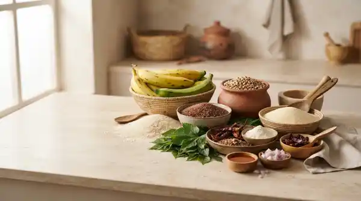

Quality ingredients
We source only the finest natural ingredients — no artificial additives, no shortcuts.
Premium African food products
Wholesome, traditionally processed Nigerian foods — from stone-milled plantain flour to fermented locust beans — delivered fresh to your kitchen.

Our products
Browse by category
Why choose us
Every product is made with intention — quality you can taste and trust.
We source only the finest natural ingredients — no artificial additives, no shortcuts.
Packed with nutrients, fibre, and goodness. Each product supports a balanced lifestyle.
Traditional methods meet modern hygiene standards for the safest, freshest product.
Loved by families across Nigeria. Every batch passes our quality checks before it reaches you.
Special offer
Stock up on your favourite Beulah Foods products today. Free delivery on orders above ₦20,000.
Shop Beulah Foods